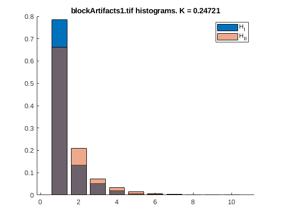
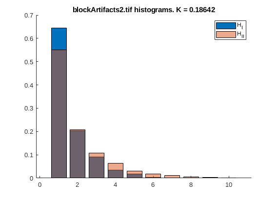
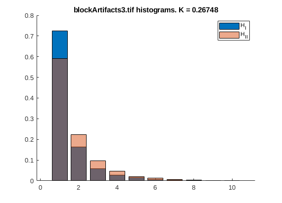

Contents
Hieu Mai (hqm23) and Tai Nguyen (tdn47) - ECES 435 - Assignment 4
clear; close all; clc
Part 1
If jpegsnoop doesn't find a match between the quantization tables and the metadata tags, does this mean that the image's origin has been falsified? How could a forger fool falsify the origin of a digital image and fool a program like jpegsnoop? Answer: If the quantization tables does not match with the camera model in the metadata, then it is very likely that the metadata is falsified because if the image is quantized with the one available in the database of the verifier, then the image output will be different. A forger can falsify the image metadata by stripping that off the original image and replace it with a different one.
% imageOrigin1: % Make: Canon, Model: Canon PowerShotA75 % Luminance quantization table: % DQT, Row #0: 1 1 1 2 3 6 8 10 % DQT, Row #1: 1 1 2 3 4 8 9 8 % DQT, Row #2: 2 2 2 3 6 8 10 8 % DQT, Row #3: 2 2 3 4 7 12 11 9 % DQT, Row #4: 3 3 8 11 10 16 15 11 % DQT, Row #5: 3 5 8 10 12 15 16 13 % DQT, Row #6: 7 10 11 12 15 17 17 14 % DQT, Row #7: 14 13 13 15 15 14 14 14 % Chrominance quantization table: % DQT, Row #0: 4 4 5 9 15 26 26 26 % DQT, Row #1: 4 4 5 10 19 26 26 26 % DQT, Row #2: 5 5 8 9 26 26 26 26 % DQT, Row #3: 9 10 9 13 26 26 26 26 % DQT, Row #4: 15 19 26 26 26 26 26 26 % DQT, Row #5: 26 26 26 26 26 26 26 26 % DQT, Row #6: 26 26 26 26 26 26 26 26 % DQT, Row #5: 12 18 28 32 41 52 57 46 % DQT, Row #7: 26 26 26 26 26 26 26 26 % These quantization table matches the camera model. % imageOrigin2: % Make: Minolta Co., Ltd; Model: DiMAGE S304 % Luminance quantization table: % DQT, Row #0: 1 1 4 5 6 5 2 5 % DQT, Row #1: 1 2 6 5 1 2 8 5 % DQT, Row #2: 1 1 2 1 1 8 3 6 % DQT, Row #3: 1 1 1 1 6 2 8 12 % DQT, Row #4: 1 2 5 1 7 10 10 12 % DQT, Row #5: 4 6 2 10 11 8 10 11 % DQT, Row #6: 5 3 10 9 7 7 9 10 % DQT, Row #7: 5 6 4 6 9 9 10 9 % Chrominance quantization table: % DQT, Row #0: 1 1 9 9 9 9 9 9 % DQT, Row #1: 2 9 9 9 2 9 9 9 % DQT, Row #2: 4 1 9 2 6 9 9 9 % DQT, Row #3: 2 6 5 4 9 9 9 9 % DQT, Row #4: 2 9 9 9 9 9 9 9 % DQT, Row #5: 9 9 9 9 9 9 9 9 % DQT, Row #6: 9 9 9 9 9 9 9 9 % DQT, Row #7: 9 9 9 9 9 9 9 9 % These quantization table matches the camera model. % imageOrigin3: % Make: Canon, Model: Canon PowerShot SD400 % Luminance quantization table: % DQT, Row #0: 1 1 2 2 3 3 7 14 % DQT, Row #1: 1 1 2 2 3 5 10 13 % DQT, Row #2: 1 2 2 3 8 8 11 13 % DQT, Row #3: 2 3 3 4 11 10 12 15 % DQT, Row #4: 3 4 6 7 10 12 15 15 % DQT, Row #5: 6 8 8 12 16 15 17 14 % DQT, Row #6: 8 9 10 11 15 16 17 14 % DQT, Row #7: 10 8 8 9 11 13 14 14 % Chrominance quantization table: % DQT, Row #0: 4 4 5 9 15 26 26 26 % DQT, Row #1: 4 4 5 10 19 26 26 26 % DQT, Row #2: 5 5 8 9 26 26 26 26 % DQT, Row #3: 9 10 9 13 26 26 26 26 % DQT, Row #4: 15 19 26 26 26 26 26 26 % DQT, Row #5: 26 26 26 26 26 26 26 26 % DQT, Row #6: 26 26 26 26 26 26 26 26 % DQT, Row #7: 26 26 26 26 26 26 26 26 % These quantization table matches the camera model. % imageOrigin4: % Make: Minolta Co., Ltd; Model: DiMAGE S304 % Luminance quantization table: % DQT, Row #0: 4 3 11 14 17 15 8 14 % DQT, Row #1: 2 6 17 16 4 6 24 15 % DQT, Row #2: 4 3 7 3 4 22 10 18 % DQT, Row #3: 3 5 4 4 17 6 23 34 % DQT, Row #4: 4 6 16 5 22 29 29 34 % DQT, Row #5: 11 19 6 29 32 24 28 32 % DQT, Row #6: 16 10 31 26 22 20 28 28 % DQT, Row #7: 16 19 14 18 26 27 29 28 % Chrominance quantization table: % DQT, Row #0: 4 5 28 28 28 28 28 28 % DQT, Row #1: 6 28 28 28 6 28 28 28 % DQT, Row #2: 13 5 28 7 18 28 28 28 % DQT, Row #3: 6 18 16 13 28 28 28 28 % DQT, Row #4: 7 28 28 28 28 28 28 28 % DQT, Row #5: 28 28 28 28 28 28 28 28 % DQT, Row #6: 28 28 28 28 28 28 28 28 % DQT, Row #7: 28 28 28 28 28 28 28 28 % The quantization table doesn't match with the ones in metadata % imageOrigin5: % Make: Sony, Model: DSC-V1 % Luminance quantization table: % DQT, Row #0: 1 1 1 1 2 3 4 5 % DQT, Row #1: 1 1 1 2 2 5 5 4 % DQT, Row #2: 1 1 1 2 3 5 6 4 % DQT, Row #3: 1 1 2 2 4 7 6 5 % DQT, Row #4: 1 2 3 4 5 9 8 6 % DQT, Row #5: 2 3 4 5 6 8 9 7 % DQT, Row #6: 4 5 6 7 8 10 10 8 % DQT, Row #7: 6 7 8 8 9 8 8 8 % Chrominance quantization table: % DQT, Row #0: 1 1 2 4 8 8 8 8 % DQT, Row #1: 1 2 2 5 8 8 8 8 % DQT, Row #2: 2 2 4 8 8 8 8 8 % DQT, Row #3: 4 5 8 8 8 8 8 8 % DQT, Row #4: 8 8 8 8 8 8 8 8 % DQT, Row #5: 8 8 8 8 8 8 8 8 % DQT, Row #6: 8 8 8 8 8 8 8 8 % DQT, Row #7: 8 8 8 8 8 8 8 8 % These quantization table matches the camera model. % imageOrigin6: % Can't find make and model % Luminance quantization table: % DQT, Row #0: 8 6 5 8 12 20 26 31 % DQT, Row #1: 6 6 7 10 13 29 30 28 % DQT, Row #2: 7 7 8 12 20 29 35 28 % DQT, Row #3: 7 9 11 15 26 44 40 31 % DQT, Row #4: 9 11 19 28 34 55 52 39 % DQT, Row #5: 12 18 28 32 41 52 57 46 % DQT, Row #6: 25 32 39 44 52 61 60 51 % DQT, Row #7: 36 46 48 49 56 50 52 50 % Chrominance quantization table: % DQT, Row #0: 9 9 12 24 50 50 50 50 % DQT, Row #1: 9 11 13 33 50 50 50 50 % DQT, Row #2: 12 13 28 50 50 50 50 50 % DQT, Row #3: 24 33 50 50 50 50 50 50 % DQT, Row #4: 50 50 50 50 50 50 50 50 % DQT, Row #5: 50 50 50 50 50 50 50 50 % DQT, Row #6: 50 50 50 50 50 50 50 50 % DQT, Row #7: 50 50 50 50 50 50 50 50 % The verifier matches the quantization tables with SONY CYBERSHOT U
Part 2
Briefly explain why the histograms of Z′ and Z′′ values should be different if an image has been JPEG compressed. Answer: For an uncompressed image, both Z'=A-B-C+D and Z''=E-F-G+H are mostly around 0 because the pixel values are often continuous. However, if JPEG compression is applied to the image, then Z' will be around 0 but Z'' will not because the quantization values are vastly different between the top corner and the bottom corner of the block.
threshold = 0.25; for i = 1:3 img = ['blockArtifacts' num2str(i) '.tif']; K = detect_fingerprints(img); if K > threshold disp([img ' has been JPEG compressed.']); else disp([img ' has not been compressed.']); end end
function K = detect_fingerprints(img) imgData = imread(img); [rows, cols] = size(imgData); segmentSize = 8; % zero padding if rows and columns not divisible by 8, not tested if mod(rows, segmentSize) imgData = [imgData; zeros(segmentSize - mod(rows, segmentSize), cols)]; [rows, cols] = size(imgData); end if mod(cols, segmentSize) imgData = [imgData, zeros(rows, segmentSize - mod(cols, segmentSize))]; [rows, cols] = size(imgData); end imgBlocks = mat2cell(imgData, ones(1,rows/segmentSize)*segmentSize, ones(1,cols/segmentSize)*segmentSize); [rowBlks, colBlks] = size(imgBlocks); z_1 = zeros(rowBlks-1, colBlks-1); z_2 = zeros(rowBlks-1, colBlks-1); for i = 1:rowBlks-1 for j = 1:colBlks-1 block_1 = int16(imgBlocks{i, j}); block_2 = int16(imgBlocks{i, j+1}); block_3 = int16(imgBlocks{i+1, j}); block_4 = int16(imgBlocks{i+1, j+1}); z_1(i, j) = abs(block_1(4, 4) - block_1(4, 5) - block_1(5, 4) + block_1(5, 5)); z_2(i, j) = abs(block_1(8, 8) - block_2(8, 1) - block_3(1, 8) + block_4(1, 1)); end end % h_1 = hist(z_1(:)); % h_1 = h_1/sum(h_1); % h_2 = hist(z_2(:)); % h_2 = h_2/sum(h_2); figure hold on h_1 = hist(z_1(:), 10); h_1 = h_1/sum(h_1); B1 = bar(h_1); h_2 = hist(z_2(:), 10); h_2 = h_2/sum(h_2); B2 = bar(h_2); K = sum(abs(h_1 - h_2)); B2.FaceAlpha = 0.5; title([img, ' histograms. K = ' num2str(K)]) legend('H_I','H_{II}') end
blockArtifacts1.tif has not been compressed. blockArtifacts2.tif has not been compressed. blockArtifacts3.tif has been JPEG compressed.  